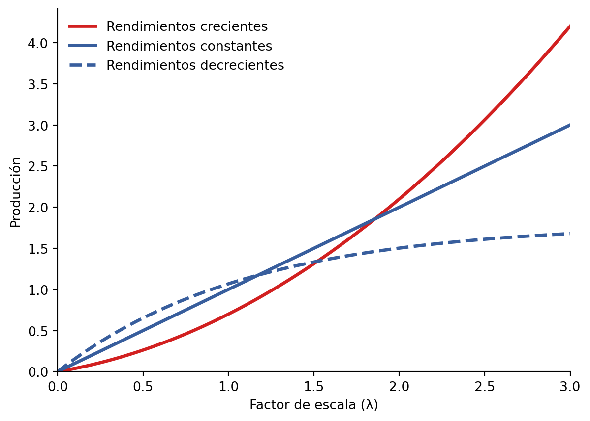
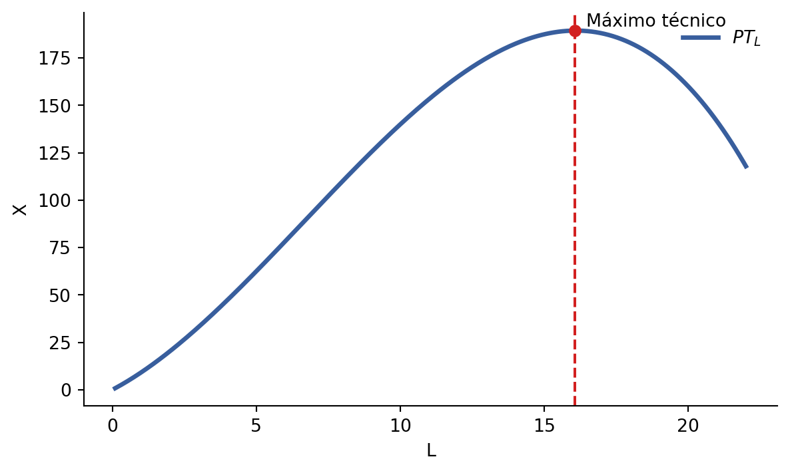
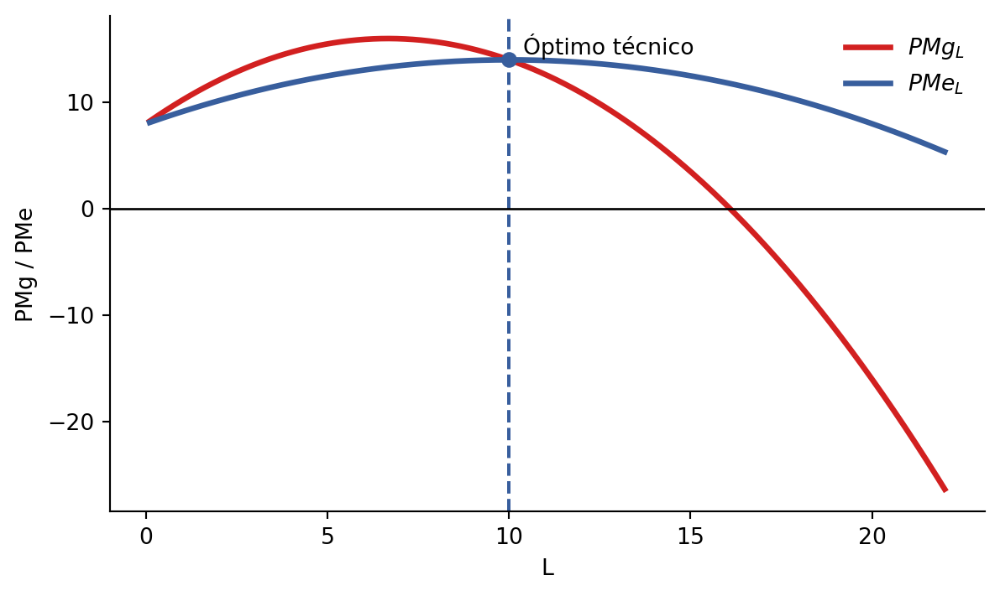
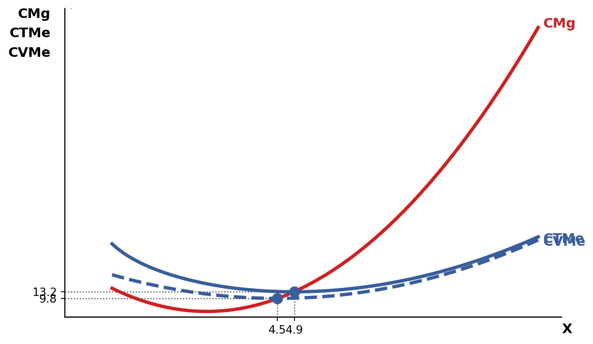
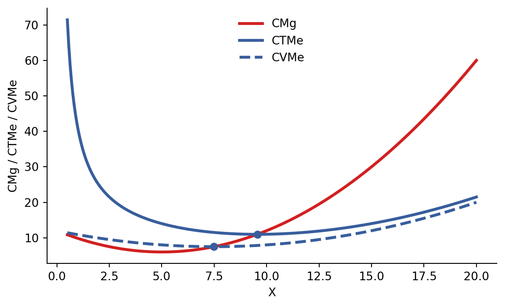
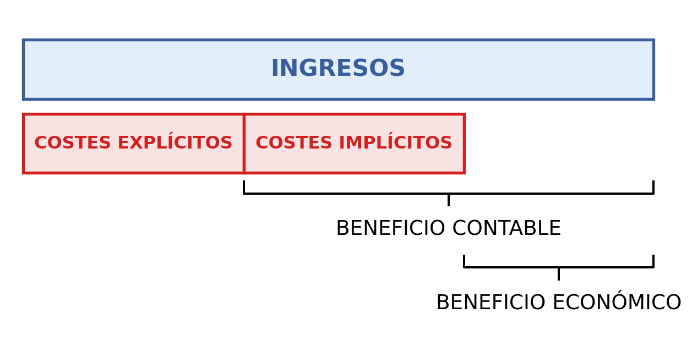

3 La empresa: producción, costes y beneficios
3.1 La empresa: naturaleza y objetivos
3.1.1 La naturaleza de la empresa
Una empresa es una organización que contrata y organiza factores productivos para la producción de bienes y servicios.
La relación que existe entre los factores y la cantidad de producto viene determinada por la función de producción: la función de producción expresa la cantidad máxima de producto que puede obtenerse con cada combinación de factores.
3.1.2 El objetivo de la empresa
El objetivo de la empresa es la maximización del beneficio. Para conseguirlo recurrirá a desembolsos o renuncias que se denominan coste de producción.
3.2 La producción
3.2.1 La eficiencia técnica y la función de producción
Una empresa actúa con eficiencia técnica cuando:
- Dada una combinación cualquiera de factores productivos, produce lo máximo posible.
- Dado un nivel de producción cualquiera, utiliza la menor cantidad posible de factores.
La relación entre cantidad de factores y cantidad producida se puede ver en la función de producción.
La función de producción implica eficiencia técnica, ya que muestra las cantidades máximas que se pueden producir:
\[ X = F(K, L) \]
El límite a la producción es la tecnología: el conjunto de conocimientos y formas de hacer y actuar para producir.
Por ejemplo, en la tabla a continuación la cantidad máxima de producción con 2 unidades de capital \((K = 2)\) y 1 unidad de trabajo \((L = 1)\) es 125 unidades de producto.
| \(L \backslash K\) | 0 | 1 | 2 | 3 |
|---|---|---|---|---|
| 0 | 0 | 0 | 0 | 0 |
| 1 | 0 | 100 | 125 | 142 |
| 2 | 0 | 160 | 200 | 228 |
| 3 | 0 | 210 | 263 | 300 |
3.2.2 Corto plazo y largo plazo
Dada una tecnología, una variación en la producción requiere una variación en la cantidad de factores utilizados. Distintos factores requieren distintos plazos para cambiar.
Corto plazo
- Alguno de los factores productivos es fijo.
- Análisis de la productividad de un factor variable.
Largo plazo
- La empresa puede ajustar todos los factores productivos a los cambios en la demanda de su producto.
- Análisis de los rendimientos a escala: cómo cambia la producción cuando todos los factores productivos varían en la misma proporción.
Si analizamos la variación en la cantidad producida cuando todos los factores varían en la misma proporción, estamos ante un análisis de los rendimientos a escala de la función de producción.
La función de producción puede tener:
- Rendimientos constantes a escala: la producción aumenta en la misma proporción que los factores productivos.
- Rendimientos crecientes a escala: la producción aumenta en mayor proporción que los factores productivos.
- Rendimientos decrecientes a escala: la producción aumenta en menor proporción que los factores productivos.
Los factores se multiplican por un número, \(\lambda\). La producción se multiplica por un número, \(\delta\).
3.2.3 Producción: rendimientos a escala
Tabla 5.5. Rendimientos a escala. La producción del bien \(X_1\) presenta rendimientos constantes a escala, la producción del bien \(X_2\) rendimientos decrecientes a escala y la producción del bien \(X_3\) rendimientos crecientes a escala.
| \(\lambda\) | \(K\) | \(L\) | \(X_1\) | \(\delta\) |
|---|---|---|---|---|
| 1 | 1 | 1 | 100 | 1 |
| 2 | 2 | 2 | 200 | 2 |
| 3 | 3 | 3 | 300 | 3 |
| \(\lambda\) | \(K\) | \(L\) | \(X_2\) | \(\delta\) |
|---|---|---|---|---|
| 1 | 1 | 1 | 100 | 1 |
| 2 | 2 | 2 | 180 | 1,80 |
| 3 | 3 | 3 | 252 | 2,52 |
| \(\lambda\) | \(K\) | \(L\) | \(X_3\) | \(\delta\) |
|---|---|---|---|---|
| 1 | 1 | 1 | 100 | 1 |
| 2 | 2 | 2 | 240 | 2,40 |
| 3 | 3 | 3 | 408 | 4,08 |
3.2.4 Producción: productividad
En el análisis a corto plazo vamos a considerar que el capital \((K)\) es fijo y sólo varía el número de unidades de trabajo \((L)\).
En la siguiente tabla se observa cómo evoluciona la producción cuando uno de los factores permanece constante.
| Capital \((K)\) | Trabajo \((L)\) | Productividad total del trabajo \((PT_L)\) |
|---|---|---|
| 1 | 1 | 100 |
| 1 | 2 | 160 |
| 1 | 3 | 210 |
Se observa que los incrementos de producción son cada vez menores; a esto se le denomina ley de rendimientos decrecientes.
3.2.4.1 Productividad total, media y marginal
Productividad total del trabajo \((PT_L)\): es el producto total obtenido para cada nivel de trabajo, siendo el capital fijo. Si se tiene la función de producción, solo hay que sustituir el capital por su valor constante \((\bar K)\):
\[ PT_L = F(\bar K, L) \]
Productividad media del trabajo \((PMe_L)\): es el producto medio obtenido por unidad de trabajo.
\[ PMe_L = \frac{PT_L}{\text{Número de unidades de trabajo }(L)} \]
Siendo \(K\) constante, también puede escribirse como:
\[ PMe_L = \frac{PT_L}{L} \]
Productividad marginal del trabajo \((PMg_L)\): es la variación que experimenta el producto total ante una variación unitaria del factor variable utilizado.
\[ PMg_L = \frac{\Delta \text{Producción total}}{\Delta \text{Número de unidades de trabajo }(L)} \]
Siendo \(K\) constante, también puede escribirse como:
\[ PMg_L = \frac{\Delta PT_L}{\Delta L} \]
| Tipo de productividad | Definición | Cálculo |
|---|---|---|
| Productividad total del trabajo \((PT_L)\) | Producción que se obtiene para cada nivel de trabajo siendo el capital fijo. | \(PT_L = F(\bar K, L)\), siendo \(F\) la función de producción y el capital \((K)\) constante. |
| Productividad media del trabajo \((PMe_L)\) | Producción que genera, en promedio, cada unidad de trabajo utilizada. | \(PMe_L = \frac{PT_L}{L}\) |
| Productividad marginal del trabajo \((PMg_L)\) | Incremento de la cantidad producida cuando el trabajo aumenta en una unidad. | \(PMg_L = \frac{\Delta PT_L}{\Delta L}\) |
Ley de rendimientos decrecientes: a partir de un punto, la productividad marginal del factor variable comienza a decrecer.
No siempre decrece desde el principio. Existen tres tramos:
- Productividad marginal creciente: cada unidad de trabajo aporta a la producción más que la unidad anterior.
- Productividad marginal constante: cada unidad de trabajo aporta a la producción la misma que la unidad anterior.
- Productividad marginal decreciente: cada unidad de trabajo aporta a la producción menos que la unidad anterior.
Tabla 5.8
| Capital \((K)\) | Trabajo \((L)\) | Producción \((X)\) / Productividad total del trabajo \((PT)\) | Productividad media del trabajo \((PMe_L)\) | Productividad marginal del trabajo \((PMg_L)\) |
|---|---|---|---|---|
| 5 | 5 | 1 | 0,200 | – |
| 5 | 9 | 2 | 0,222 | 0,25 |
| 5 | 12 | 3 | 0,250 | 0,33 |
| 5 | 14 | 4 | 0,285 | 0,50 |
| 5 | 15 | 5 | 0,333 | 1,00 |
| 5 | 17 | 6 | 0,353 | 0,50 |
| 5 | 20 | 7 | 0,350 | 0,33 |
| 5 | 24 | 8 | 0,333 | 0,25 |
| 5 | 29 | 9 | 0,310 | 0,20 |
| 5 | 35 | 10 | 0,286 | 0,16 |
Ejemplos de cálculo que aparecen sobre la tabla:
\[ \frac{1}{5} = 0{,}200 \]
\[ \frac{2}{9} = 0{,}222 \]
\[ \frac{2 - 1}{9 - 5} = \frac{1}{4} = 0{,}25 \]
Máximo técnico
- Es la cantidad de trabajo donde la productividad total es máxima y deja de crecer.
- En ese punto la productividad marginal es cero.
Óptimo técnico
- Es la cantidad de trabajo donde la productividad media es máxima.
- En ese punto coinciden la \(PMg_L\) y \(PMe_L\).


3.3 Los costes de producción
3.3.1 Los costes de producción: el concepto
Los factores productivos conllevan unos costes de producción:
- Coste explícito: implica un desembolso o pago para la empresa.
- Coste implícito: no implica un pago sino una renuncia.
Costes contables = costes explícitos.
Costes económicos = costes explícitos + costes implícitos, medidos todos los recursos por su coste de oportunidad.
Para los costes de producción, consideramos siempre el coste económico.
3.3.2 Los costes de producción: la función de costes
La función de costes relaciona cada nivel de producción \(X\) con el coste económico mínimo que implica generar ese nivel de producción:
\[ CT = CT(X) \]
Esta función implica eficiencia económica: producir con el menor coste posible.
Un ejemplo:
\[ CT = 100 + 5X \]
El coste mínimo para producir 10 unidades sería:
\[ CT = 100 + 5 \cdot 10 = 150 \]
3.3.3 Costes a corto plazo: fijos, variables, totales
Tenemos dos factores:
- Capital \((K)\), que será fijo: \(K = \bar K\).
- Trabajo \((L)\), que será variable.
Si la empresa quiere aumentar la producción, solo podrá hacerlo contratando más trabajo.
Coste fijo \((CF)\): es independiente del nivel de producción.
Ejemplo: el alquiler del local. Se calcula multiplicando el precio de cada unidad de capital \((v)\) por la cantidad de capital utilizada.
\[ CF = v \cdot \bar K \]
Coste variable \((CV)\): depende del nivel de producción.
Ejemplo: salarios de trabajadores. Se calcula multiplicando el precio de cada unidad de trabajo, es decir, el salario \((w)\), por el número de trabajadores \((L)\).
\[ CV = w \cdot L \]
Coste total: es la suma del coste fijo \((CF)\) más el coste variable \((CV)\).
\[ CT = CF + CV \]
También:
\[ CT = v \cdot \bar K + w \cdot L \]
En el ejemplo anterior:
\[ CT = 100 + 5X \]
3.3.4 Costes a corto plazo: medios, marginales
Para los costes asociados a cada unidad de producto se calculan los costes medios \((CMe)\) y los costes marginales \((CMg)\).
Costes medios \((CMe)\): miden el coste promedio por unidad de producto.
Costes marginales \((CMg)\): miden lo que cuesta producir una unidad adicional.
Costes medios \((CMe)\): miden el coste promedio por unidad de producto.
Coste total medio \((CTMe)\): coste promedio por unidad de producto.
\[ CTMe = \frac{\text{Coste total}}{\text{N.º unidades producidas}} = \frac{CT}{X} = \frac{CV + CF}{X} \]
Coste variable medio \((CVMe)\): coste variable promedio por unidad de producto.
\[ CVMe = \frac{\text{Coste variable}}{\text{N.º unidades producidas}} = \frac{CV}{X} \]
Coste fijo medio \((CFMe)\): coste fijo promedio por unidad de producto.
\[ CFMe = \frac{\text{Coste fijo}}{\text{N.º unidades producidas}} = \frac{CF}{X} \]
Costes marginales \((CMg)\): miden lo que cuesta producir una unidad adicional.
\[ CMg = \frac{\text{Aumento del coste total o variable}}{\text{Aumento del n.º de unidades producidas}} = \frac{\Delta CT}{\Delta X} = \frac{\Delta CV}{\Delta X} \]


| Cuando el coste marginal es | El coste variable medio | Consecuencia |
|---|---|---|
| Inferior al coste variable medio | Disminuye. | La curva de coste marginal corta a la de coste variable medio en el mínimo de esta última. |
| Igual al coste variable medio | Alcanza su mínimo. | |
| Superior al coste variable medio | Aumenta. |
| Cuando el coste marginal es | El coste total medio | Consecuencia |
|---|---|---|
| Inferior al coste total medio | Disminuye. | La curva de coste marginal corta a la de coste total medio en el mínimo de esta última. |
| Igual al coste total medio | Alcanza su mínimo. | |
| Superior al coste total medio | Aumenta. |
3.4 Relación entre productividades y costes
| Productividad marginal del trabajo | Cada trabajador adicional aumenta la producción… | Para producir una unidad adicional, son necesarios… | Según la producción aumenta, el coste aumenta… | Coste marginal |
|---|---|---|---|---|
| Creciente | … cada vez en mayor medida | … cada vez menos trabajadores adicionales | … cada vez en menor medida | Decreciente |
| Constante | … siempre en la misma medida | … siempre los mismos trabajadores adicionales | … siempre en la misma medida | Constante |
| Decreciente | … cada vez en menor medida | … cada vez más trabajadores adicionales | … cada vez en mayor medida | Creciente |
Figura 5.5 del libro Economía: teoría y práctica de J. M. Blanco, 6.ª edición.
Esto implica que si la productividad marginal del trabajo alcanza un máximo, el coste marginal alcanza un mínimo.
3.5 Los ingresos y el beneficio
3.5.1 Ingreso vs. beneficio
El ingreso por ventas:
\[ \text{Ingreso total }(IT) = \text{Precio del producto }(P) \cdot \text{Cantidad vendida }(X) \]
El beneficio:
\[ B^\circ = IT - CT \]
El beneficio contable: la diferencia entre ingresos y costes contables.
El beneficio económico: la diferencia entre ingresos y costes económicos.
- Costes contables: costes explícitos.
- Costes económicos: costes explícitos + costes implícitos.
- Beneficio contable: ingresos menos costes contables.
- Beneficio económico: ingresos menos costes económicos.

| Si el beneficio económico es | Se denomina | Y significa que |
|---|---|---|
| Negativo | Pérdida | Lo que obtiene la empresa es inferior a lo que podrían obtener los recursos si se utilizasen en su mejor opción alternativa. |
| Cero | Beneficio nulo o normal | Lo que obtiene la empresa es igual que lo que podrían obtener los recursos si se utilizasen en su mejor opción alternativa. |
| Positivo | Beneficio extraordinario | Lo que obtiene la empresa es superior a lo que podrían obtener los recursos si se utilizasen en su mejor opción alternativa. |